Analyser l’opération.
Relier le projet, les pièces, le marché, les coûts et les garanties. Distinguer les faits étayés, les risques identifiés et les vérifications utiles.
Découvrir l’analyse
Analyse documentaire d’opérations immobilières
Un regard indépendant sur les pièces, les risques identifiés et les questions encore ouvertes, avant de s’engager ou au fil de l’opération.
Sans intérêt financier dans l’issue de l’opération.
Les engagements de PAAUne marque d’AOI Network · Accessible sans adhésion · Mission sur devis
Trois moments d’intervention
Investisseurs & conseilsParticuliers, professionnels, CGP, représentants de la masse
OpérateursPorteurs de projets et associés
Plateformes & prêteursÉquipes de financement et de suivi
Relier le projet, les pièces, le marché, les coûts et les garanties. Distinguer les faits étayés, les risques identifiés et les vérifications utiles.
Découvrir l’analyseRapprocher les nouvelles pièces de la référence initiale : avancement, fonds, travaux, ventes et calendrier. Comprendre les écarts et leurs conséquences.
Découvrir le suiviÉtablir un avis de situation, comparer des scénarios et, si la mission le prévoit, appuyer les échanges entre les parties. Accessible sans analyse PAA préalable.
Faire le point sur un aléaUn périmètre, un livrable et des honoraires convenus avant engagement.
Voir les prestations et les honorairesLes honoraires rémunèrent l’analyse, que l’opération soit financée ou non. Ils ne dépendent ni d’un accord entre les parties, ni d’une vente, ni d’un recouvrement.
PAA est une marque d’AOI Network, filiale d’AOI Holding. Avant chaque mission, les liens du groupe, des dirigeants et des auteurs de l’avis sont examinés.
Une adhésion à AOI ne suffit pas à exclure une mission. En revanche, un intérêt économique du groupe dans l’issue de l’opération, notamment une commission liée à sa réalisation, ou l’appréciation de ses propres travaux dans l’opération exclut l’analyse indépendante PAA. Un accompagnement AOI peut être étudié dans son cadre ; l’avis indépendant doit alors relever d’un tiers extérieur autonome.
L’analyse expose ses sources, ses limites et les pièces manquantes. Elle n’est ni une certification, ni une recommandation personnalisée de placement, ni une garantie de financement ou de remboursement.
Pièces à l’appui
Un projet à examiner, une évolution à comprendre ou un retard à éclaircir. Précisez votre rôle et votre échéance : le premier cadrage est offert, sans engagement.
Décrire mon dossierVotre demande est transmise à l’équipe PAA.
Elle ne crée aucun compte AOI et n’est pas diffusée aux membres.